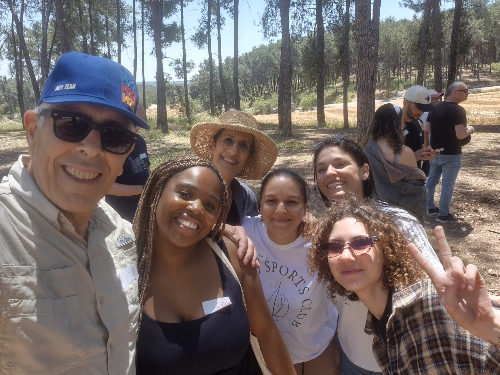
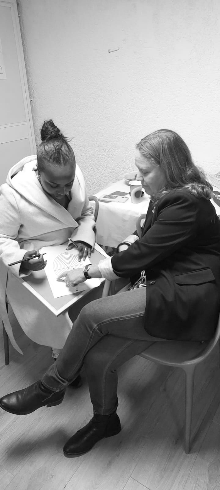

לחיילות ולחיילים משוחררים
השתחררת?
יש לך עמית
לדרך.
שנה של ליווי אישי, סדנאות וחיבורים - ללא עלות.


לחיילות ולחיילים משוחררים
שנה של ליווי אישי, סדנאות וחיבורים - ללא עלות.
שחרור מהצבא, מלחמה, ועכשיו האזרחות…
שאלה טובה! אם השתחררת משירות ב-5 השנים האחרונות וזו שאלה שמעסיקה אותך - ההזדמנות הזאת בדיוק בשבילך.
המעטפת שלנו
אנחנו מסתכלים על כל אחד ואחת בהתאם לרצונות, לצרכים, ולחלומות שלכם. ממש ככה.

להתחיל תואר בהנדסת תעשייה וניהול ועבודה תוך כדי - מבחינתי זה לא היה קורה בלי התהליך העמוק שלי עם המנטור והתמיכה של העמותה.
גבריאל מלמד, 27
איך זה עובד?
התכנית של ״עמית לדרך״ נתנה לי גב ותמיכה ועזרה לי להתגבר על הפער ביני לבין האחרים, וביני לבין המכללה. אני כל כך ממליצה לכל מי שמגיע מרקע שלא מאפשר, להצטרף לתכנית!
שלומית סיט, 25
למי זה מתאים?
* מילואים פעיל ובודדים - 10 שנים.
אז, בא לך לתת לעצמך מתנה לחיים?
יאללה, להשאיר פרטיםאו להתקשר: 054-792-4900info@amitladerech.org
האגף לחיילים משוחררים ומילואים במשרד הביטחון, בשיתוף עם עמית לדרך